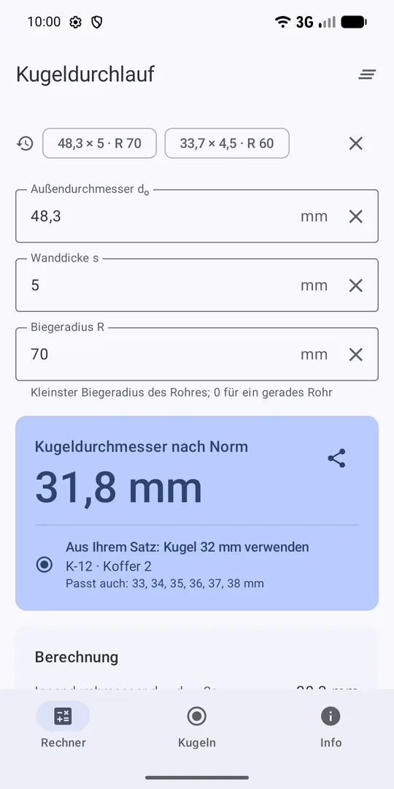
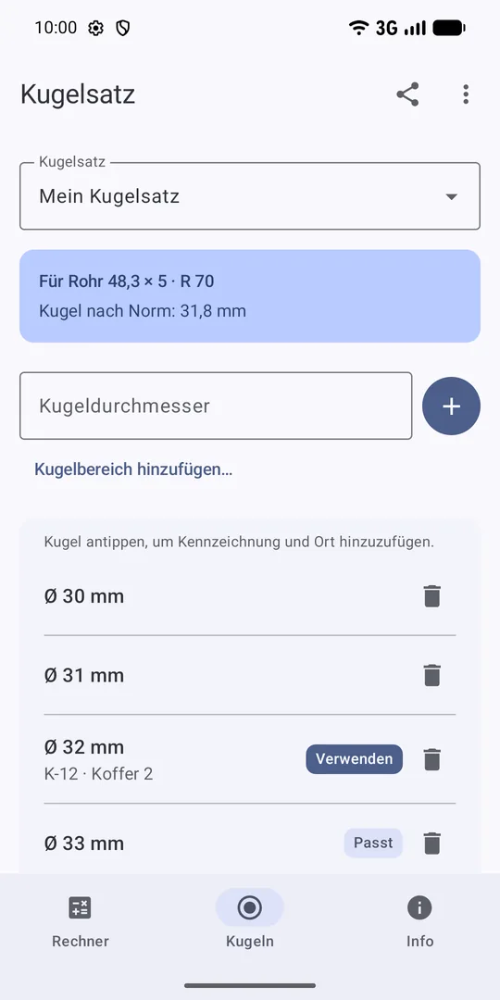

Kugeldurchlaufversuch – Kugeldurchmesser in Sekunden
Außendurchmesser, Wanddicke und Biegeradius eingeben – die App berechnet den Kugeldurchmesser für den Kugeldurchlaufversuch nach VGB-S-013 oder KTA 3211.1 und schlägt die passende Kugel aus Ihrem Koffer vor.
Bei Google Play herunterladen Kostenlos, ohne Werbung, offline. Ab Android 8.0.

Was ist der Kugeldurchlaufversuch?
Beim Kugeldurchlaufversuch wird geprüft, ob gebogene Rohre und Rohrschlangen in den Bögen nicht zu stark abgeflacht sind. Eine Stahlkugel mit festgelegtem Durchmesser wird durch das Rohr getrieben; geht sie frei durch, ist der Querschnitt in Ordnung. Der Versuch gehört zur Fertigung von Kesseln, Überhitzern, Economisern und anderen Druckteilen.
Kugeldurchmesser bestimmen
KTA 3211.1 (Abschnitte 10.2.2.2 und 10.4.2.2)
An jedem kaltgebogenen Rohr ist der Kugeldurchlaufversuch durchzuführen. Eine Kugel vom Durchmesser
D_K = dᵢ − (größte zulässige Maßunterschreitung + 0,1 · dᵢ + 2 mm)
muss freien Durchgang haben. dᵢ ist der Nenn-Innendurchmesser; die größte zulässige Maßunterschreitung stammt aus der Rohrspezifikation. Die Regel gilt für ferritische Rohre bis 38 × 4 mm und austenitische bis 42,4 × 3,6 mm.
VGB-S-013 (Abschnitt 7.2.5, Tabelle 3)
Der Kugeldurchmesser ist der Innendurchmesser abzüglich des Werts aus Tabelle 3. Der Wert hängt vom Innendurchmesser (Zeilen 20–29, 30–39 und 40–49 mm) und vom Biegeverhältnis R/dₒ ab.
Beispiel: Rohr 48,3 × 5 mm, Biegeradius 70 mm
- Innendurchmesser: dᵢ = 48,3 − 2 · 5 = 38,3 mm (Zeile 30–39 mm)
- Biegeverhältnis: R/dₒ = 70 / 48,3 = 1,44 (Spalte 1,0–1,5)
- Abzug nach Tabelle 3: 6,5 mm
- Kugeldurchmesser: 38,3 − 6,5 = 31,8 mm
Funktionen
- Ergebnis sofortDer Kugeldurchmesser erscheint schon bei der Eingabe, auch über der Tastatur auf kleinen Handys.
- RechenwegInnendurchmesser, Biegeverhältnis und Abzug – leicht nachzuprüfen und ins Protokoll zu übernehmen.
- Ihre KugelsätzeKugeln jedes Koffers oder jeder Werkstatt, mit Kennzeichnung und Ort. Die App schlägt die passende vor.
- Sätze teilenKugelsatz per QR-Code oder Text an Kollegen weitergeben.
- Zwei NormenVGB-S-013 und KTA 3211.1, mit Warnung, wenn das Rohr außerhalb des Geltungsbereichs liegt.
- Ohne Werbung, offlineKeine Datenerfassung. Deutsch, Polnisch und Englisch.
Fragen
Welcher Kugeldurchmesser gilt nach KTA 3211.1?
D_K = dᵢ − (größte zulässige Maßunterschreitung + 0,1 · dᵢ + 2 mm). Beispiel: Rohr 25 × 2,6 mm mit 0,5 mm Maßunterschreitung ergibt dᵢ = 19,8 mm und D_K = 15,32 mm.
Funktioniert die App ohne Internet?
Ja. Sie funktioniert vollständig offline, ohne Werbung und ohne Datenerfassung. Kugelsätze und letzte Rohre bleiben auf dem Gerät.
Ersetzt die App die Norm?
Nein. Sie ist ein Hilfsmittel – Ergebnisse immer mit der aktuellen Ausgabe der Norm und den Projektanforderungen prüfen.